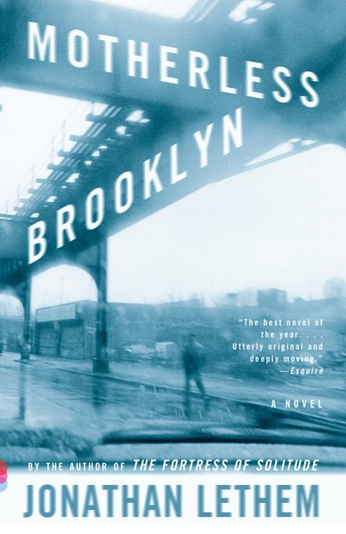

Jonathan Lethem
Every month we pull one writer off the shelf and hand them to you like a good shell. October is Jonathan Lethem: Brooklyn detectives, talking kangaroos, superheroes, and a lifelong soft spot for used bookstores.
His new essay in The New York Review of Books, “Second Chances,” is about lost books finding new readers. It opens in a bookshop. As a teenager in 1978, Lethem apprenticed at the first shop of his friend Michael Seidenberg, who loved pressing “lost” books on anyone who walked in. Then it turns to the reissue of Wilfrid Sheed's 1966 novel Office Politics.
“We live in a continuing great era of rediscovered books.”
Jonathan Lethem, “Second Chances,” NYRB, October 22, 2026 issueHe even compares reissue presses to “a sea turtle laying a thousand eggs.” Some hatch, some don't. Our kind of metaphor.
Start Here

Motherless Brooklyn
Lionel Essrog, a Brooklyn orphan with Tourette's, tries to solve his boss's murder while keeping the words straight in his head. Funny, sad, and a National Book Critics Circle Award winner. Start here, then come back for the rest.
Buy NowThe Lethem Shelf
Five more, from his first novel to his newest stories.
Two motherless boys, Dylan and Mingus, grow up on the same 1970s Brooklyn block. Funk, graffiti, superheroes, and a friendship that breaks your heart a little.
His first novel. A private eye in near-future Oakland, with a rabbit in his waiting room and a kangaroo on his tail. Noir, but weirder.
A former child star and a paranoid pop-culture critic drift through a foggy, surreal Manhattan with a tiger on the loose. A gray-beach-day book.
More than fifty years of one Brooklyn neighborhood, told through the kids on the street. Back on his home turf, and it shows.
His newest: thirty stories from thirty-five years, new and selected. One story per towel flip.
The Lost Book
Office Politics
The book Lethem's essay is about. The editor of a small New York weekly has a heart attack, and the staff quietly fight over who's in charge. Lethem calls it Sheed's best novel: “imagine Game of Thrones populated by versions of Bartleby the Scrivener.” He isn't a total convert, which is half the fun of the essay.
Buy NowRead & Listen
The New York Review of Books
“Second Chances”
Lethem on reissues, rediscoveries, and Office Politics. October 22, 2026 issue.
Read the EssayKnown Associates • Southwest Review
Season 2, Episode 1
Elizabeth Nelson opens season two with Lethem: writing, his band the Disassociation, Charles Portis, noir, and ranking his favorite film directors.
Hear the EpisodeQuick Answers
Who is the Book & Shores Author of the Month?
For October 2026, it's Jonathan Lethem. Each month we pick one writer, their best books, and a reason to read them right now.
What is Jonathan Lethem's new essay about?
“Second Chances,” in the October 22, 2026 issue of The New York Review of Books, looks at why rediscovered, out-of-print books keep finding new readers, through the McNally Editions reissue of Wilfrid Sheed's 1966 novel Office Politics.
Where should I start with Jonathan Lethem?
Motherless Brooklyn, his National Book Critics Circle Award winner. If you want something bigger, go to The Fortress of Solitude next.
What is Jonathan Lethem's newest book?
A Different Kind of Tension: New and Selected Stories, thirty stories spanning thirty-five years. Browse more in our bookstore.
Sources: The New York Review of Books, Southwest Review.